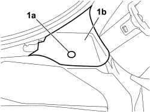
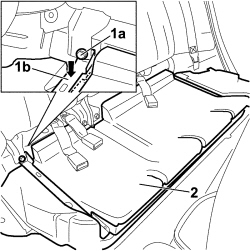

7050A33 REAR SEAT CUSHION SOUND DEADENING DEVICE/SPACER - R R
- Path
- Procedures > 70 FITTINGS > 7050 REAR SEATS > 7050A REAR SEAT ASSEMBLY > 7050A33 REAR SEAT CUSHION SOUND DEADENING DEVICE/SPACER - R R
- Kind
- repair procedure (removal / refitting; the operation number is the code)
- Applies to
- all engines; all production periods
- Interactive page
- https://sloeber94.github.io/elrnDB-fCrm/en/#/194001146
Applies to: all engines; all production periods
 Removing
Removing
 Refitting
RefittingOp. 7050A20 ONE-PIECE REAR SEAT CUSHION - R.R.
1. Undo retaining stud (1a) to release trim (1b) from the soundproofing/spacer on both sides.

Applies to: all engines; all production periods
1. Unscrew bolts (1a) and press as indicated on the retaining straps (1b) to release from the seat backrest anchorage brackets.
2. Prise up and remove the soundproofing/spacer from the vehicle.

Applies to: all engines; all production periods
Refitting
Removing- Check that the rear seat cushion soundproofing/spacer is undamaged.
- Position the soundproofing/spacer in its seat on the vehicle , keeping the seat belt anchorage links raised.
- Raise the straps, engaging the under the seat backrest anchorage brackets, and tighten the bolts to the specified torque.
Component | Fastening | dia | Value (daNm) | Validity |
|---|---|---|---|---|
LEFT/RIGHT BAND FASTENING REAR SEAT BASE AND REAR SEAT BACKREST TO CROSSMEMBER | Bolt | M10x1.25 | 3,6 ÷ 4,4 |
- Position the cover and fasten it using the retaining buttons.
Topics linked from this page (1)
Topics that link to this page (6)
- 1040A70 SUBMERGED PUMP ASSEMBLY COMPLETE WITH LEVEL GAUGE CONTROL - R + R
- 1040B36 REAR FUEL DELIVERY LINE - R.R
- 1040B56 REAR FUEL RETURN PIPE - R.R.
- 5020M30 PUMP FOR METERING FUEL TO SUPPLEMENTARY INDEPENDENT HEATER R R
- 5505A48 CONTROL UNIT (DIGITAL NETWORK NODE) IN BOOT COMPARTMENT - R.R.
- 5505C41 PASSENGER COMPARTMENT WIRING - R.R